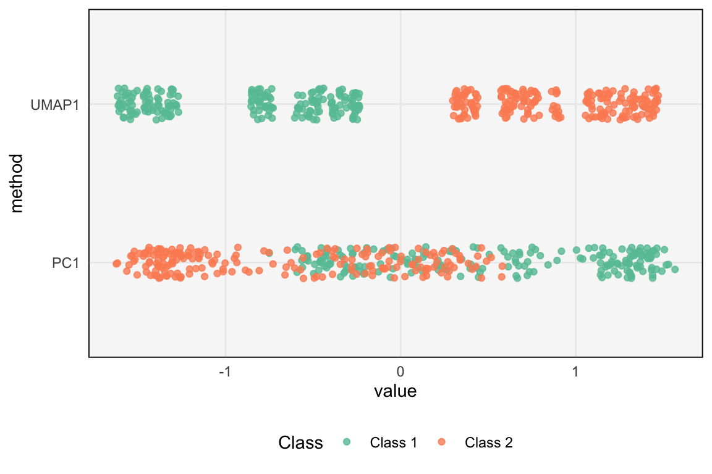
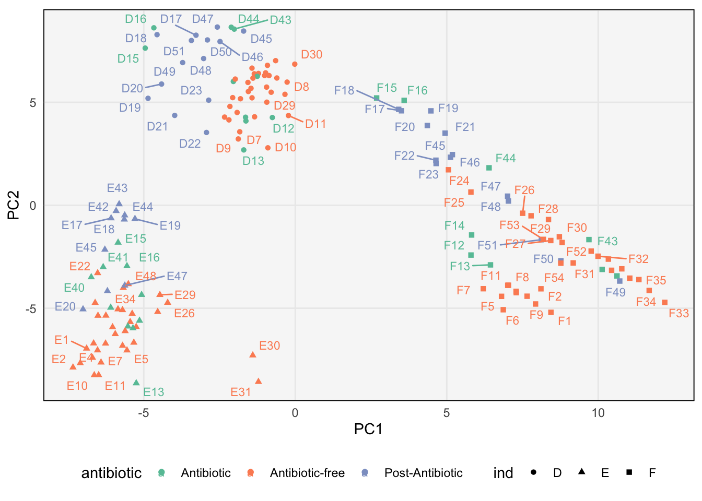
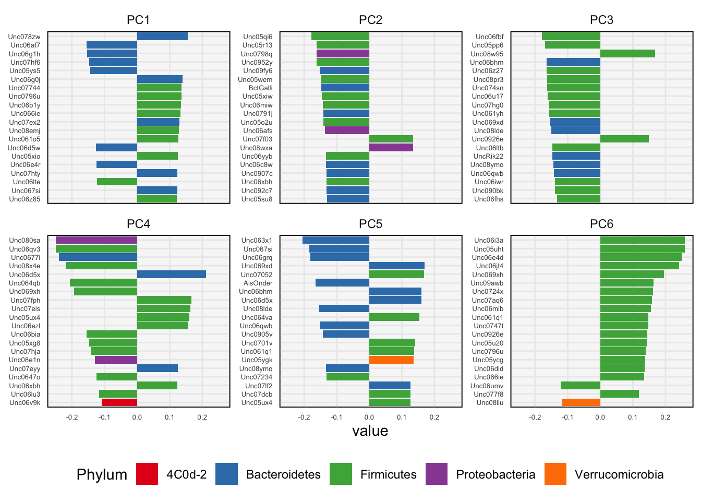
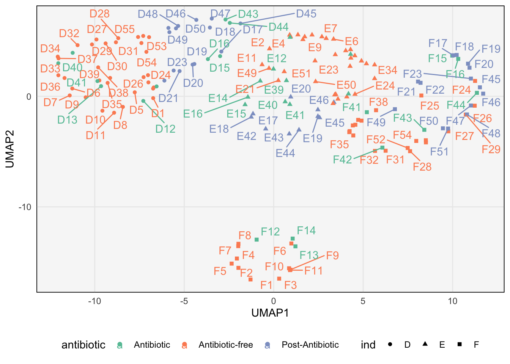
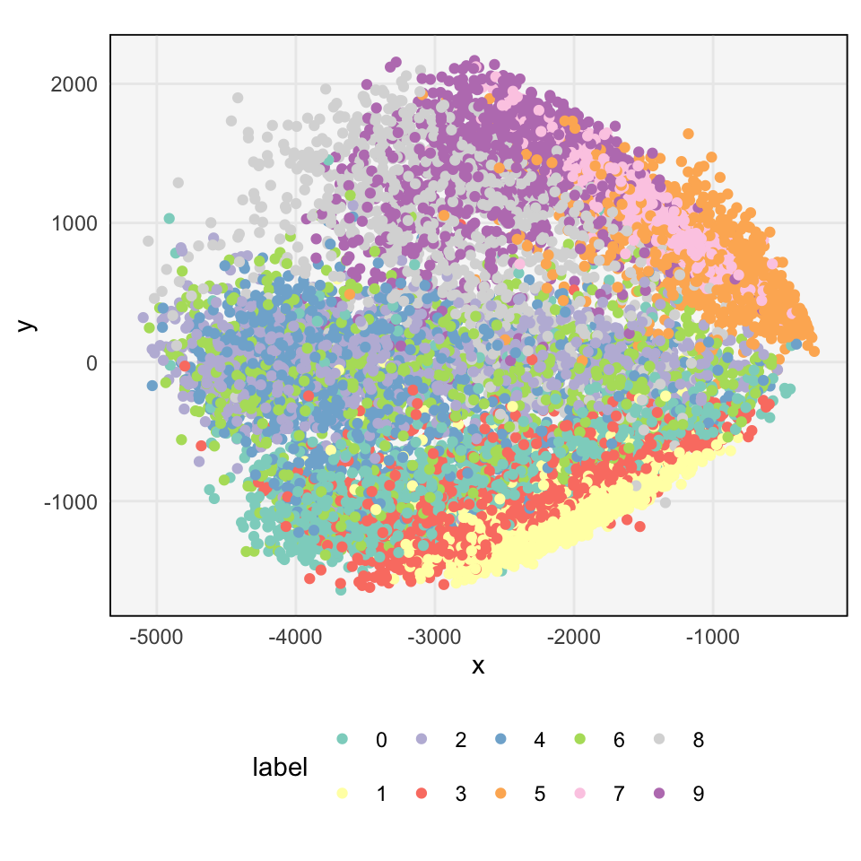
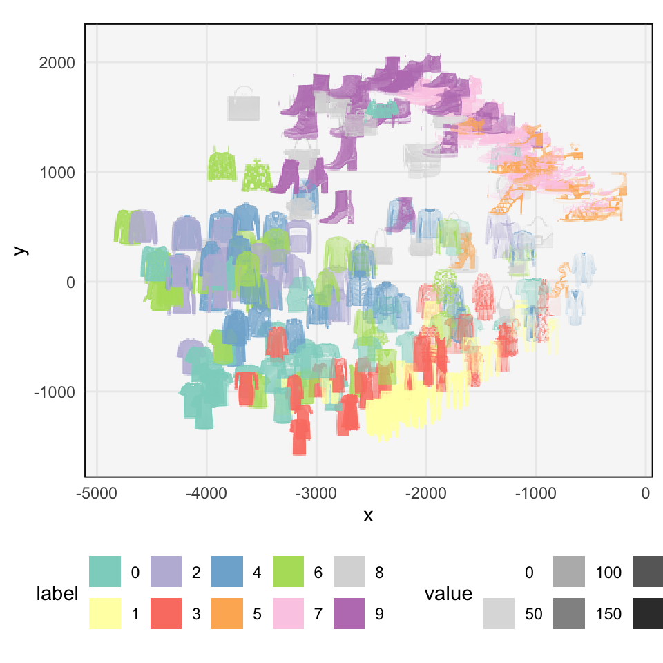
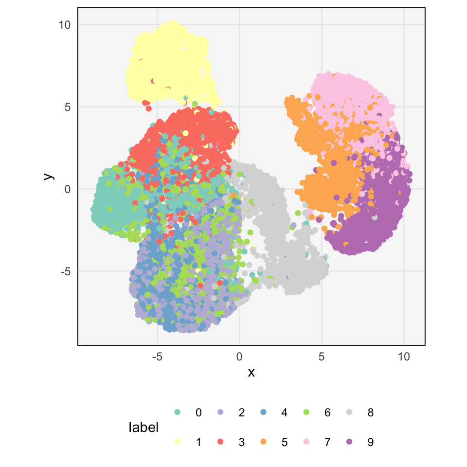
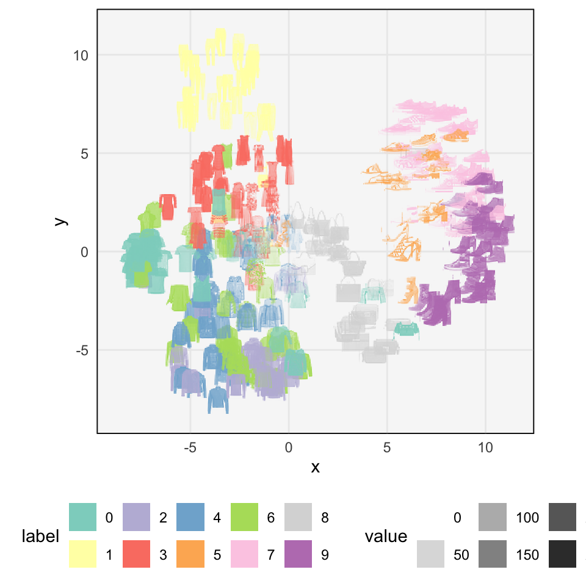

library(embed)
library(tidyverse)
library(ggrepel)
library(tidymodels)
library(tidytext)
theme479 <- theme_minimal() +
theme(
panel.grid.minor = element_blank(),
panel.background = element_rect(fill = "#f7f7f7"),
panel.border = element_rect(fill = NA, color = "#0c0c0c", size = 0.6),
legend.position = "bottom"
)
theme_set(theme479)
set.seed(479)PCA and UMAP Examples
More examples of dimensionality reduction using PCA and UMAP.
Reading 1 and 2, Recording, Rmarkdown
- These notes don’t introduce any new conceptual material. Instead, they give a few examples of how PCA and UMAP can be used.
From two dimensions to one
- We presented the two moons dataset earlier as an example where UMAP, but not PCA, would be able to discover a one-dimensional representation that separates the groups. The implication is that, if we anticipate some sort of nonlinearity in higher-dimensions (which we can’t directly visualize), then UMAP would be a more suitable choice.
moons <- read_csv("https://uwmadison.box.com/shared/static/kdt9qqvonhcz2ssb599p1nqganrg1w6k.csv")
ggplot(moons, aes(X, Y, col = Class)) +
geom_point() +
scale_color_brewer(palette = "Set2")
- The code block below defines both the PCA and UMAP recipes. There is no need to normalize the data, since the two dimensions are already on the same scale.
moons_ <- recipe(~ ., data = moons) %>%
update_role(Class, new_role = "id")
pca_rec <- step_pca(moons_, all_predictors(), num_comp = 1)
umap_rec <- step_umap(moons_, all_predictors(), num_comp = 1)- The block below shows both the UMAP and PCA representations. The PCA representation seems to mostly reflect the variation on the \(x\)-axis of the original data, and the two classes mix together. On the other hand, the UMAP clearly separates the groups. This is expected, since the nearest neighborhood graph that defines UMAP is likely separated into two major components, one for each moon.
scores <- bind_cols(
prep(umap_rec) %>% juice() %>% mutate(UMAP1 = scale(UMAP1)),
prep(pca_rec) %>% juice() %>% select(-Class)
) %>%
pivot_longer(-Class, names_to = "method")
ggplot(scores, aes(value, method, col = Class)) +
geom_point(position = position_jitter(h = 0.1), alpha = 0.8) +
scale_color_brewer(palette = "Set2") 
Antibiotics Dataset
- We can apply dimensionality reduction to the antibiotics dataset described in lecture 2 - 1. There, we had filtered down to the 6 most abundant bacteria. Now we will consider 147 most abundant, which means that each sample can be imagined as a vector in a 147-dimensional space. Ideally, a dimensionality-reduction procedure should be able to place samples close to one another when they have similar species profiles. In addition to loading species counts, we load taxonomic information about each species, in the
taxavariable.
antibiotic <- read_csv("https://uwmadison.box.com/shared/static/t1lifegdz8s0a8lgckber32ytyh9hu4r.csv")
taxa <- read_csv("https://uwmadison.box.com/shared/static/ng6y6etk79lrm0gtsgw2u0yq6gqcozze.csv")- We now define a PCA recipe. Since the counts are relatively skewed, we log-transform1, using
step_log. The rest of the definition is like the 2D example above.
antibiotic_ <- recipe(~ ., data = antibiotic) %>%
update_role(sample:antibiotic, new_role = "id") %>%
step_log(all_predictors(), offset = 1) %>%
step_normalize(all_predictors())
pca_rec <- step_pca(antibiotic_, all_predictors())
pca_prep <- prep(pca_rec)- We generate a map of the PCA scores below. The primary difference is between the three study participants – D, E, and F. Within each person, there is some variation between the antibiotic periods, as indicated by the points’ colors.
scores <- juice(pca_prep)
variances <- tidy(pca_prep, 2, type = "variance")
ggplot(scores, aes(PC1, PC2, col = antibiotic)) +
geom_point(aes(shape = ind), size = 1.5) +
geom_text_repel(aes(label = sample), check_overlap = TRUE, size = 3) +
coord_fixed(sqrt(variances$value[2] / variances$value[1])) +
scale_color_brewer(palette = "Set2")
- Which species contribute the most to the principal components? We can analyze this like we did with the cocktails dataset. In addition to plotting the raw component value, we also join in the taxa information. This allows us to color in each bar by the species group that each bacteria belongs to. For example, we see that samples on the right side of the plot above (i.e., high PC1) likely have more Firmicutes than Bacteroidetes. PC2 seems to pick up on two species that have higher abundance when the rest drop-off.
components_ <- tidy(pca_prep, 3) %>%
filter(component %in% str_c("PC", 1:6)) %>%
mutate(terms_ = reorder_within(terms, abs(value), component)) %>%
group_by(component) %>%
top_n(20, abs(value)) %>%
left_join(taxa)
ggplot(components_, aes(value, terms_, fill = Phylum)) +
geom_col() +
facet_wrap(~ component, scales = "free_y") +
scale_y_reordered() +
labs(y = NULL) +
scale_fill_brewer(palette = "Set1") +
theme(axis.text = element_text(size = 5))
- We can use similar code to compute a UMAP embedding. The UMAP seems to separate the different timepoints more clearly. However, there is no analog of
componentswith which to interpret the different axes. Instead, a typical approach to interpret the representation is to find points that are close together (e.g., using \(K\)-means) and take their average species profile.
umap_rec <- step_umap(antibiotic_, all_predictors(), min_dist = 1.5)
umap_prep <- prep(umap_rec)
scores <- juice(umap_prep)
ggplot(scores, aes(UMAP1, UMAP2, col = antibiotic)) +
geom_point(aes(shape = ind), size = 1.5) +
geom_text_repel(aes(label = sample), max.overlaps = 10) +
scale_color_brewer(palette = "Set2")
Image Data
- Both PCA and UMAP can be used on image data. Here, each pixel in an image is considered a different feature. For example, the FashionMNIST dataset includes 60,000 28 x 28 images of fashion objects. We can think of image as a vector2 \(x_{i} \in \mathbb{R}^{784}\). The goal of dimensionality reduction in this context is to build an atlas of images, where images with similar overall pixel values should be located next to one another. First, we read in the data and subsample it, so the code doesn’t take so long to run.
fashion <- read_csv("https://uwmadison.box.com/shared/static/aur84ttkwa2rqvzo99qo7yhxemoc6om0.csv") %>%
sample_frac(0.2) %>%
mutate(
image = row_number(),
label = as.factor(label)
)- Each row of the matrix above is a separate image. We can prepare a PCA recipe just like in the two examples above. Note that we are not normalizing the features – the pixels are already on a common scale.
fashion_ <- recipe(~ ., data = fashion) %>%
update_role(label, image, new_role = "id")
pca_rec <- step_pca(fashion_, all_predictors())
pca_prep <- prep(pca_rec)- The code below extracts the PCA scores and visualizes them as a cloud of points. Each point corresponds to an image, and the different types of fashion items are indicated by color. It seems that the types are well separated, but the labels are not informative… to understand what the colors mean, we need to look at the images.
scores <- juice(pca_prep) %>%
rename(x = PC1, y = PC2)
ggplot(scores, aes(x, y, col = label)) +
geom_point() +
scale_color_brewer(palette = "Set3") +
coord_fixed()
- The block below overlays the first 300 images from the dataset at the locations from the previous plot. We have prepared a function to generate this sort of image using ggplot2; however, we have hidden it to avoid cluttering these notes. You can view the function in the rmarkdown link at the top of this document.
pivot_scores(scores, fashion) %>%
overlay_images()
- Finally, we can repeat the exercise above with UMAP. The first plot shows the UMAP scores and the second overlays the same set of 300 images onto these new coordinates. It seems that UMAP can more clearly separate shoes and pants from shirts and sweaters.
umap_rec <- step_umap(fashion_, all_predictors(), num_comp = 2, min_dist = 0.5)
umap_prep <- prep(umap_rec)
scores <- juice(umap_prep) %>%
rename(x = UMAP1, y = UMAP2)
ggplot(scores, aes(x, y, col = label)) +
geom_point() +
scale_color_brewer(palette = "Set3") +
coord_fixed()
pivot_scores(scores, fashion, scale_factor = 0.05) %>%
overlay_images(scale_factor = 0.05)